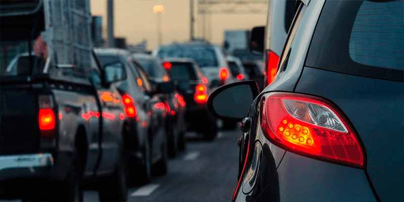
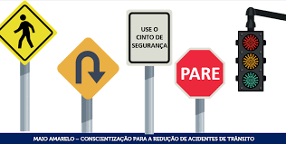

Segurança no transito:como evitar acidentes de transito
Algumas promissas básicas para dirigir com segurança e evitar acidentes

Responsabilidade ao volante
Os acidentes de trânsito são um problema de saúde pública mundial. Segundo os dados de 2015 do Ministério da Saúde,
o Brasil está na quinta colocação entre os países com o maior número de vítimas de trânsito.
Nesse contexto, os acidentes podem estar relacionados a vários fatores, que incluem, entre outras questões, desorganização do trânsito,
más condições dos veículos e das rodovias brasileiras, o comportamento dos condutores e a fiscalização precária.
De acordo com a ONU, os acidentes de trânsito representam a 9ª causa de mortes em todo o mundo.
Premissas para prevenção de acidentes de trânsito

Não usar celular no volante
o uso de celular durante a direção é proibido pela legislação de trânsito (Artigo 252) e pode gerar multa.
Ao falar ao telefone enquanto dirige ou responder mensagens no WhatsApp,
o nível de concentração do motorista diminui e ele fica aquém de fatores externos,
como uma colisão,
um animal na pista ou a necessidade de desviar rapidamente.
Por isso, nunca usar celular enquanto dirige é uma premissa básica para um trânsito seguro. Além de livrar-se das multas,
o motorista colabora para a segurança de todos os outros condutores e pedestres que estão na pista e evita acidente.
Respeitar os limites de velocidade
à velocidade do veículo no momento do acidente: uma em cada três mortes por acidentes de trânsito
em todo mundo é ocasionada por alta velocidade.
O relatório Managing Speed indica que uma redução de 5% na velocidade média pode resultar em uma redução de 30% das colisões fatais.
O estudo ressalta que quanto maior a velocidade do veículo, maior o risco de lesões e mortes para pedestres. Por isso, respeitar os limites develocidade
é essencial
para evitar acidentes de trânsito!
Utilizar os faróis corretamente
A iluminação inadequada dos veículos pode atrapalhar outros motoristas que trafegam na pista.
Como evitar acidentes no trânsito
Para evitar infrações no trânsito, deve-se dirigir sempre com atenção, pois assim evita acidentes. Além disso, manter uma distância segura,
utilizar as setas e respeitar as sinalizações fazem com que o trânsito seja mais seguro.